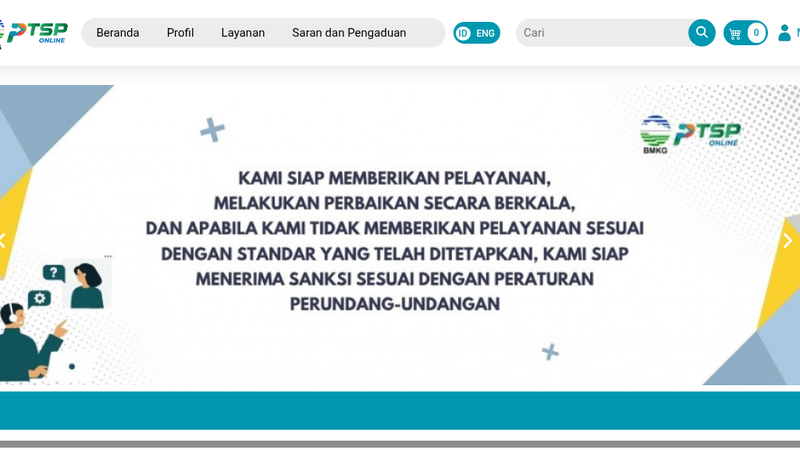
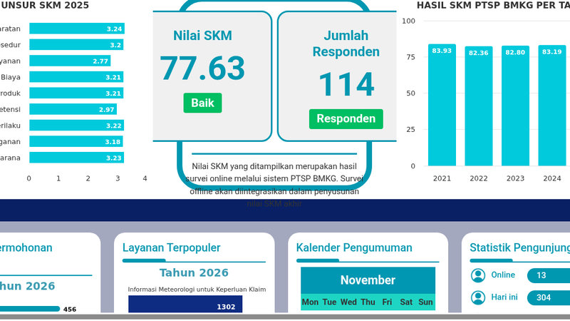
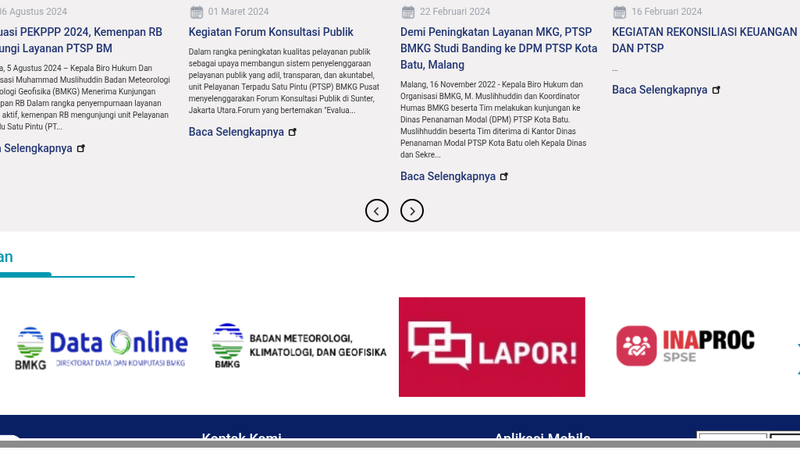
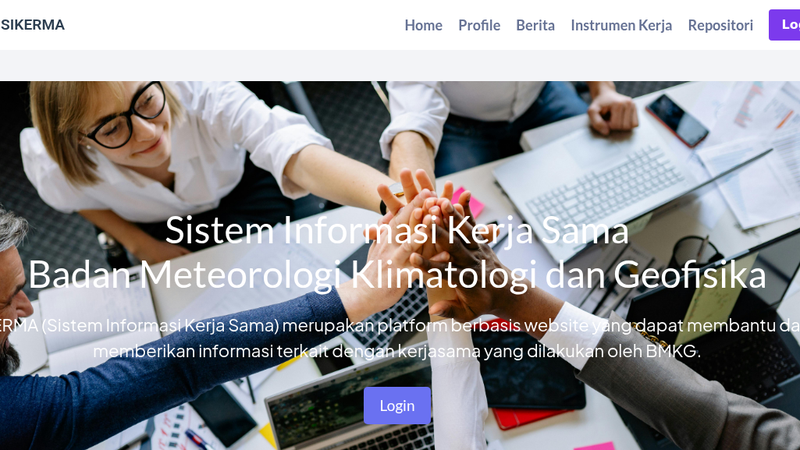

Featured Projects
PTSP BMKG
Integrated service platform for meteorological, climatological, and geophysical data requests, as well as MKG equipment calibration services. Streamlines request workflows and ensures data accessibility.



Sikerma BMKG
Operational cooperation coordination system managing BMKG's national and international partnerships. Facilitates structured collaboration, document management, and stakeholder engagement.

Work Experience
Software Developer
Build scalable web applications, robust backends, and optimized database architectures. Full-stack engineering with Nuxt (frontend), Node.js & Golang (backend), RDBMS, and AI integration using TensorFlow for climate pattern analysis and sensor anomaly prediction.
Education
Bachelor of Meteorology, Climatology, and Geophysics Instrumentation
Sekolah Tinggi Meteorologi, Klimatologi, dan Geofisika (STMKG), Jakarta
Certifications
Technical Skills
Agentic AI Engineering
Developing autonomous AI systems that function as digital workers. Focus on tool integration, reasoning chains, and efficient workflow automation.